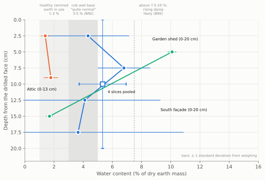

Moisture in cob


What water does an old cob wall hold? The earth feels dry; but how much water, and where? Before insulating, it is the starting state of any moisture calculation, and almost nothing is published for old cob in service. We took earth from three walls and weighed each sample as taken and after drying in a kitchen oven: the water is the difference.
In short
- A dry core, a wet skin. In the wall of an unheated garden shed, the first 10 cm hold 10 % water, the next 10 cm 1.7 %. The attic partition wall is dry (1.4 to 1.8 %).
- The façade cannot be read slice by slice: too little earth per core. Pooled: 5.3 ± 1.6 %.
- Biases make the earth look drier than it is: these values are more likely minimums.
- A water content is not a relative humidity. Going from one to the other needs the sorption isotherm of the wall’s earth, which we did not measure: on two published earths, the same 3 % content is worth 75 % or 90 % relative humidity.
- Before closing a wall, a damp skin amounts to some 12 to 15 kg of water per m² that will have to leave: to be measured when closing.
The paper in three parts
- The measurement: what was sampled, how, what the balance showed. Nothing else.
- The interpretation: how the weighings become a water content (choices, noise, bias), and what that says about the walls, with the literature.
- What this changes for insulating: the isotherm, the damp skin, what to measure. The author’s moisture calculations for specific insulation systems are not published: no conclusion about an insulant.

Limits
One day, one sample per place, no repetition; a façade that gave only 0.5 to 2 g of earth per slice; no isotherm measured on these earths, so relative humidities that are only readings on other earths. Reference points to discuss, not design values.
Going further
Your feedback
You have measured the moisture of an old cob wall, you see a mistake,
you have the isotherm of a comparable earth: tell us (GitHub
issues) or write to
remi.cura+terre@gmail.com.
Everything behind the paper is in the humidite-de-la-bauge/
folder of the GitHub repository: raw readings, the code that rebuilds
the numbers and figures, and the photos. Text, data, figures and photos
under CC BY 4.0; code under the MIT licence.
This topic complements Screws in cob, whose tests were made on the shed wall measured here.